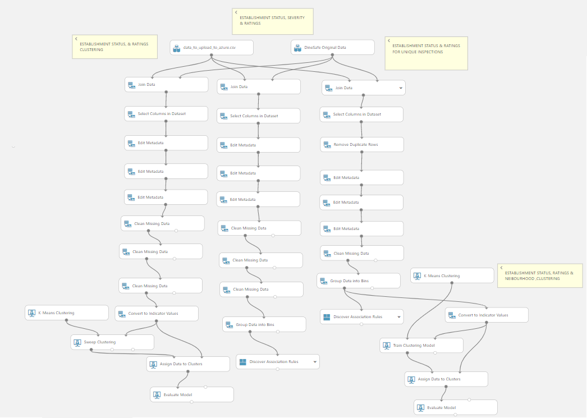
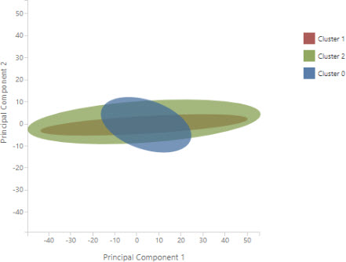
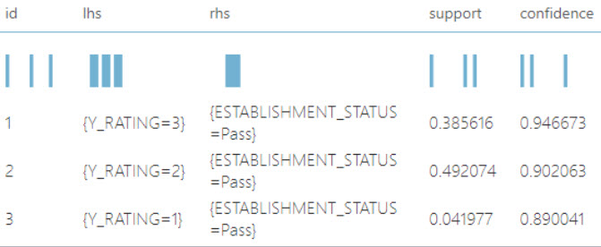

Are you dining safe? Comparison of Yelp user ratings and health inspection data
Descriptive data mining project by: Karina Abreu, Ahmed Emam, Sarah Gorman, Jon Lubanski
Introduction & Problem Definition
Standards of food safety are important to consumers when deciding where to eat out, and this area is also a matter of
public safety. Public health programs, such as the DineSafe food safety inspection system, exist to protect and improve public health in Ontario;
however, when deciding where to eat, consumers are more likely to check Yelp for reviews then DineSafe for health inspection results.
In this project we wanted to answer the following question:
Is there a relationship between restaurants with high ratings on Yelp and restaurants that
are clean and hygienic?
We hypothesize that there might be a disconnect between public perceptions of cleanliness, as expressed through Yelp ratings,
and the result of Dinesafe inspections.
The datasets we will be using both rely on human judgment to some degree. The DineSafe data presents more of an “expert” measure of an
establishment compared with consumers' arbitrary impressions of that same establishment on Yelp. Our goal from such comparison is to see
whether there are associations between these two very different ways of making judgments.
Datasets
For this project we used a dataset from DineSafe and another from Yelp.
The DineSafe dataset consists of health inspection records sourced from the City of Toronto open data portal. The dataset consists of 90,521 records
for over 10,000 unique establishments and 55,589 inspections from 2016 to 2018. Each record represents the result of a single inspection for an
establishment. Some of the more meaningful attributes in this dataset are: Establishment status, infraction details, and severity.
The Yelp rating dataset was obtained from Yelp.ca, which offers a variety of different datasets open-source. We used their “Business” dataset which
consist of business record saved as json objects and was part of a much larger dataset. These are records of all kinds of establishments, not just eating
places, and these businesses are found all over Canada and the US. The dataset consists of 188,593 uniquely registered businesses. Some of the more
meaningful attributes in this dataset are: rating, address, name, neighbourhood, and category.
Data pre-processing
The biggest challenges we faced were understanding the data and figuring out how we could join our two datasets.
The first thing we did in preprocessing the data was to reduce the Yelp dataset to data about food-related establishments within the City of Toronto.
We used a Python script to parse the json file from Yelp and limit the dataset to the desired records. Secondly, we deleted irrelevant columns and tuples with
missing values from both datasets.
The DineSafe data was fairly clean and standardized and did not require much preprocessing, but it was difficult to join with the Yelp dataset.
The DineSafe data contained multiple inspection records per establishment, so the first thing we did was reduce the dataset to contain only one unique
record per establishment, just for the purpose of finding matchpoints between the datasets. We used Excel for this purpose.
After we found possible matchpoints between the two datasets, we brought the full set of DineSafe records back in.
To find the matchpoints, we first tried joining using GPS data (Latitude and Longitude) which was a common attribute of both datasets.
We worked with Azure Machine Learning Studio to join the datasets. However, we quickly learned that Latitude and Longitude coordinates are approximated, therefore,
we got very few matches because of small variations in the digits between the datasets. Next we tried to match on addresses but soon realized that the addresses on
Yelp are not standardized in any way. In addition, Yelp addresses contained unit numbers within buildings while the DineSafe addresses did not.
To deal with these issues, I took on the task of standardizing the addresses in both datasets down to the street number and the first 1 or 2 words of the street name.
This improved the accuracy of our matching. We also removed any establishments with shared addresses from DineSafe - we couldn’t match these with the
Yelp data without unit numbers, they would just throw off our results. We decided to restrict our analysis to the establishments that had data we
could work with: standalone establishments that are not part of food courts or plazas. We connected the datasets using a fuzzy match on the
establishment name and address, and kept results with over 80% accuracy.
Once we found matchpoints between the two datasets, we did an inner join using Azure Machine Learning Studio to get 22,546 records (so, about 25% of the DineSafe records we started
with and about 12% of the yelp business dataset).
Data Analysis Methods
Using Azure Machine Learning Studio, we started by using K-means clustering because it would let us broadly explore our joined dataset and identify
relationships between inspection results, establishment characteristics, and Yelp ratings. We wanted to group establishments into clusters that contain similar characteristics to help us
discover unexpected correlations that we might not logically derive by browsing the data.
To get the data ready for clustering, we needed to do further transform it in Azure. We changed data types of certain columns from numeric to
categorical, removed irrelevant columns and rows with missing data that had been missed dueing pre-processing, and converted the Inspection Result (Pass, Conditional Pass, Closed) and Neighbourhoods from categories into numeric features so the
algorithm could actually work with them.
We used the attributes Ratings, Neighbourhood, Establishment status to run 2 clustering experiments: one using the Parametre Range trainer
mode with the Sweep Clustering training model so it would choose the optimal set of hyperparameters for us, and another the the Single Parametre
trainer mode with the Train Clustering model.
Next we used association rule mining to find frequent patterns and inherent regularities in the data. To prepare our data, we binned the Yelp
ratings into three bins: “low” (0 to 2), “average” (2.1 to 3.5) and “high” (3.6 to 5) so we would end up with more focused rules. We standardized
the instruction details for inspection results, and cleaned up the establishment categories.
We ran 4 association rule experiment to answer the following questions:
What restaurant categories are most likely to receive a passing inspection result?
What Yelp rating is most frequently associated with establishments that has passed an inspection?
Are there any associations between Yelp rating, inspection outcome, neighbourhood, and infraction details?

Experimental Results
We hypothesized that there will not be a relationship between Yelp restaurant ratings and DineSafe inspection results, and this was
confirmed through our experiments. The resulting clustering models did not produce any comprehensible results. Our clusters overlapped each other,
we ran the experiment with different parameters and it was a variation of this every time.

With association rule mining, we found that:
Restaurants with a rating between 3.5 & 5 → Pass (38%, 94%)
Restaurants with a rating between 2.1 & 3.4 Rating → Pass (49%, 90%)
Restaurants with a rating between 0 & 2.1 Rating → Pass (4%, 89%)

So we can say with a bit more confidence that a restaurant with a higher Yelp rating will pass an inspection, but the difference the highest
rating and the lowest rating is only 5%. So all restaurant have a similarly chance of passing an inspection, regardless of their Yelp rating.
Moreover, we could not find any rules with more than 2 items that had more than 3% support. So essentially, there are no associations between more
than two items in our datasets.
In conclusion, public perceptions of the cleanliness and food safety in a particular restaurant do not not reflect the actual situation in the
kitchen. This could be because the general public might assess a restaurant’s food hygiene standards based solely on things like aesthetic,
quality of customer service, or price range.
Next Steps
Using both Dinesafe and Yelp data, build a decision tree classifier model for restaurant inspections that would predict a pass, conditional
pass or closed result
Balance the Dinesafe data to include more inspections with conditional pass and closed results; inspections were heavily skewed toward a Pass result